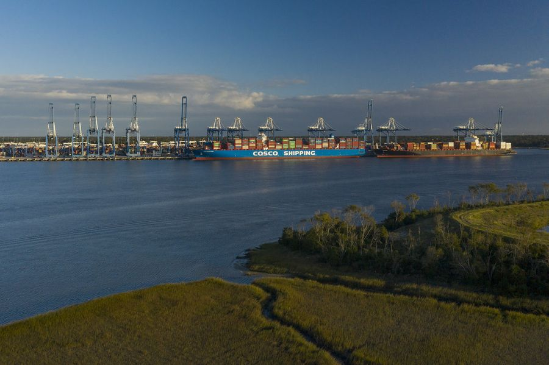

プルゼニ、ヨーロッパリーグ2026/27：対戦相手、日程と結果、歴史Plzeň v Evropské lize 2026/27: Soupeři, program a výsledky, historieプルゼニのサッカー選手たちは、ヨーロッパリーグで開幕3連敗のあと2連勝した。第4節ではノルウェーのリレストロムのホームで1-0で勝利し、その後ホームで大勝した
プルゼニ、ヨーロッパリーグ2026/27：対戦相手、日程と結果、歴史Plzeň v Evropské lize 2026/27: Soupeři, program a výsledky, historieプルゼニのサッカー選手たちは、ヨーロッパリーグで開幕3連敗のあと2連勝した。第4節ではノルウェーのリレストロムのホームで1-0で勝利し、その後ホームで大勝した バログン、2ゴールで首位モナコをけん引、ブライトンもKLでさらに勝利Balogun dvěma góly pomohl vedoucímu Monaku, další výhru přidal v KL i Brightonブライトンの選手たちは、ガーナ人ウイングのイブラヒム・オスマンの2ゴールもあり、ウニヴェルシタテア・クラヨーヴァに4-0で勝利し、不完全な順位表で2位に浮上した
バログン、2ゴールで首位モナコをけん引、ブライトンもKLでさらに勝利Balogun dvěma góly pomohl vedoucímu Monaku, další výhru přidal v KL i Brightonブライトンの選手たちは、ガーナ人ウイングのイブラヒム・オスマンの2ゴールもあり、ウニヴェルシタテア・クラヨーヴァに4-0で勝利し、不完全な順位表で2位に浮上した クリミアが暗闇に包まれた。停電は半島外での事故が原因と当局が主張Krym se ponořil do tmy. Elektřina vypadla kvůli havárii mimo poloostrov, tvrdí úřadyロシアに占領されているウクライナのクリミア半島とセヴァストポリ市は今日、停電に見舞われた。原因は半島外のエネルギー施設の事故だったと発表
クリミアが暗闇に包まれた。停電は半島外での事故が原因と当局が主張Krym se ponořil do tmy. Elektřina vypadla kvůli havárii mimo poloostrov, tvrdí úřadyロシアに占領されているウクライナのクリミア半島とセヴァストポリ市は今日、停電に見舞われた。原因は半島外のエネルギー施設の事故だったと発表 クリミアが闇に包まれた。事故は半島外で起きたと電力会社が主張Krym se pohroužil do tmy. Havárie je mimo poloostrov, tvrdí energetici木曜日の間に、ロシアに占領されたウクライナのクリミア半島は停電に見舞われた。関係企業によると、停電はエネルギー設備の事故に関連していた
クリミアが闇に包まれた。事故は半島外で起きたと電力会社が主張Krym se pohroužil do tmy. Havárie je mimo poloostrov, tvrdí energetici木曜日の間に、ロシアに占領されたウクライナのクリミア半島は停電に見舞われた。関係企業によると、停電はエネルギー設備の事故に関連していた プルゼニのフロショフスキー：自分たちが何を成し遂げたのか、まだ実感が湧かない。まだ楽しめるといいがPlzeňský Hrošovský: Ani si neuvědomuje, čeho jsme dosáhli. Snad si to ještě užijeme先制ゴールを決め、4点目をアシストした。パトリク・フロショフスキーは真のキャプテンとしてプルゼニの選手たちを率い、名門ベンフィカ・リスボンに4-0で圧勝した。
プルゼニのフロショフスキー：自分たちが何を成し遂げたのか、まだ実感が湧かない。まだ楽しめるといいがPlzeňský Hrošovský: Ani si neuvědomuje, čeho jsme dosáhli. Snad si to ještě užijeme先制ゴールを決め、4点目をアシストした。パトリク・フロショフスキーは真のキャプテンとしてプルゼニの選手たちを率い、名門ベンフィカ・リスボンに4-0で圧勝した。 シックのレバークーゼンがELで再び勝利、ベンフィカの崩壊でボーンマスが首位にSchickům Leverkusen v EL opět slaví, Bournemouth je po kolapsu Benfiky v čeleパトリク・シックを前線に擁するバイエル・レバークーゼンは、ヨーロッパリーグでザグレブのディナモを2-0で破り、勝ち点12で上位8チーム内にとどまっている。
シックのレバークーゼンがELで再び勝利、ベンフィカの崩壊でボーンマスが首位にSchickům Leverkusen v EL opět slaví, Bournemouth je po kolapsu Benfiky v čeleパトリク・シックを前線に擁するバイエル・レバークーゼンは、ヨーロッパリーグでザグレブのディナモを2-0で破り、勝ち点12で上位8チーム内にとどまっている。 殺人者と売人に「ありがとう」。トランプ氏、祝日のメッセージに移民と選挙を絡めるDěkuji vrahům a dealerům. Trump do svátečního vzkazu zapletl migraci i volby米国のドナルド・トランプ大統領は、米国の最も重要な祝日の一つである感謝祭に、米国の愛国者たちだけでなく、殺人者や麻薬売人にも祝いの言葉を送った。
殺人者と売人に「ありがとう」。トランプ氏、祝日のメッセージに移民と選挙を絡めるDěkuji vrahům a dealerům. Trump do svátečního vzkazu zapletl migraci i volby米国のドナルド・トランプ大統領は、米国の最も重要な祝日の一つである感謝祭に、米国の愛国者たちだけでなく、殺人者や麻薬売人にも祝いの言葉を送った。 ユヘルカ氏、シュヴァルツシステム合法化への一歩で批判を浴び、方針を転換Juchelka schytal kritiku za krok k legalizaci švarcsystému a vzal zpátečkuアレシュ・ユヘルカ労働・社会大臣は、従属労働の定義を変更する試みを断念した。彼の提案は労働組合や野党の一部から厳しい批判を引き起こした
ユヘルカ氏、シュヴァルツシステム合法化への一歩で批判を浴び、方針を転換Juchelka schytal kritiku za krok k legalizaci švarcsystému a vzal zpátečkuアレシュ・ユヘルカ労働・社会大臣は、従属労働の定義を変更する試みを断念した。彼の提案は労働組合や野党の一部から厳しい批判を引き起こした チェルヴェニー氏、引き続きKRNAP長官を擁護 カリブ海旅行をめぐる問題は解決済みとみなすČervený dál hájí šéfa KRNAPu. Kauzu cesty do Karibiku považuje za uzavřenouイゴール・チェルヴェニー環境相（モトリスト）は木曜日のČT24のインタビュー番組で、クルコノシェ国立公園（KRNAP）長官のペトル・モラ…を改めて擁護した
チェルヴェニー氏、引き続きKRNAP長官を擁護 カリブ海旅行をめぐる問題は解決済みとみなすČervený dál hájí šéfa KRNAPu. Kauzu cesty do Karibiku považuje za uzavřenouイゴール・チェルヴェニー環境相（モトリスト）は木曜日のČT24のインタビュー番組で、クルコノシェ国立公園（KRNAP）長官のペトル・モラ…を改めて擁護した ヤブロネツ－ルガーノ 2:0、初勝利をもたらしたのはこぼれ球への詰め、ツェディドラとジャウォが得点Jablonec - Lugano 2:0, první výhru přinesly dorážky, trefili se Cedidla a Jawoヤブロネツのサッカー選手たちがカンファレンスリーグで初勝利を祝った。4試合目で、これまで勝ち点を1つも落としていなかったルガーノをホームで破った。スイスの…
ヤブロネツ－ルガーノ 2:0、初勝利をもたらしたのはこぼれ球への詰め、ツェディドラとジャウォが得点Jablonec - Lugano 2:0, první výhru přinesly dorážky, trefili se Cedidla a Jawoヤブロネツのサッカー選手たちがカンファレンスリーグで初勝利を祝った。4試合目で、これまで勝ち点を1つも落としていなかったルガーノをホームで破った。スイスの… スロバキア東部の集落で子ども1人が焼死、さらに2人が行方不明V osadě na východě Slovenska uhořelo dítě, další dvě jsou nezvěstnéスロバキア東部で数軒の住居が夜間に火災に遭い、子ども1人が死亡し、さらに2人が行方不明となっている。警察の広報担当者イングリダ・パヴロフスカー氏は夕方、伝えた
スロバキア東部の集落で子ども1人が焼死、さらに2人が行方不明V osadě na východě Slovenska uhořelo dítě, další dvě jsou nezvěstnéスロバキア東部で数軒の住居が夜間に火災に遭い、子ども1人が死亡し、さらに2人が行方不明となっている。警察の広報担当者イングリダ・パヴロフスカー氏は夕方、伝えた プルゼニ－ベンフィカ 4:0、名門チームを屈服、ホームチームはミスを逃さず大金星Plzeň - Benfica 4:0, slavný tým na kolenou, domácí trestali kiksy a způsobili senzaci1点、2点、3点、4点。大金星だ。プルゼニのサッカー選手たちが名門ベンフィカ・リスボンを粉砕した。今季のヨーロッパリーグ5試合目で4-0で勝利した
プルゼニ－ベンフィカ 4:0、名門チームを屈服、ホームチームはミスを逃さず大金星Plzeň - Benfica 4:0, slavný tým na kolenou, domácí trestali kiksy a způsobili senzaci1点、2点、3点、4点。大金星だ。プルゼニのサッカー選手たちが名門ベンフィカ・リスボンを粉砕した。今季のヨーロッパリーグ5試合目で4-0で勝利した プルゼニがベンフィカを4:0で下す。ヤブロネツも勝利を収めるPlzeň porazila Benficu 4:0. Vítězství si připsal také Jablonec欧州カップ戦に出場するチェコのチームは、ホームで際立った強さを見せた。プルゼニはヨーロッパリーグでベンフィカを4ゴール差で破り、ヤブロネツはこれまでの首位…を打ち破った
プルゼニがベンフィカを4:0で下す。ヤブロネツも勝利を収めるPlzeň porazila Benficu 4:0. Vítězství si připsal také Jablonec欧州カップ戦に出場するチェコのチームは、ホームで際立った強さを見せた。プルゼニはヨーロッパリーグでベンフィカを4ゴール差で破り、ヤブロネツはこれまでの首位…を打ち破った フーシ派がサウジアラビアの製油所を攻撃し、操業を停止させるHúthíové zaútočili na saúdskoarabskou rafinerii, zastavili provozイエメンの親イラン反政府勢力であるフーシ派によるサウジアラビアの石油製油所への攻撃で1人が死亡し、操業が一時停止した。
フーシ派がサウジアラビアの製油所を攻撃し、操業を停止させるHúthíové zaútočili na saúdskoarabskou rafinerii, zastavili provozイエメンの親イラン反政府勢力であるフーシ派によるサウジアラビアの石油製油所への攻撃で1人が死亡し、操業が一時停止した。 エネルギー価格が上昇、人々が最も追加で支払うのはガスによる熱Energie zdražují, nejvíce si lidé připlatí za teplo z plynu電気もガスも値上がりが続いている。E.ONは新たに、価格固定のない約10万人の顧客を対象に1月10日からガス価格を引き上げると発表した。ČEZやプラハ・ガス…もエネルギー価格を引き上げている
エネルギー価格が上昇、人々が最も追加で支払うのはガスによる熱Energie zdražují, nejvíce si lidé připlatí za teplo z plynu電気もガスも値上がりが続いている。E.ONは新たに、価格固定のない約10万人の顧客を対象に1月10日からガス価格を引き上げると発表した。ČEZやプラハ・ガス…もエネルギー価格を引き上げている 赤軍兵士の像は広場から撤去されなければならない、パルドゥビツェでようやく合意Socha rudoarmějce musí z náměstí pryč, shodli se konečně v Pardubicíchパルドゥビツェの共和国広場にある赤軍兵士像の行方をめぐる長年の議論が終わるかもしれない。新たに発足した中道右派の市政連合は、その彫像群が…と合意した
赤軍兵士の像は広場から撤去されなければならない、パルドゥビツェでようやく合意Socha rudoarmějce musí z náměstí pryč, shodli se konečně v Pardubicíchパルドゥビツェの共和国広場にある赤軍兵士像の行方をめぐる長年の議論が終わるかもしれない。新たに発足した中道右派の市政連合は、その彫像群が…と合意した MotoGP - 2026年バレンシアGPをテレビで：フィリプ・サラチュも出場、どこでライブ視聴できるかMotoGP - VC Valencie 2026 v TV: kde sledovat živě i s Filipem Salačem2026年ロードレース世界選手権の最終開催地はスペインのバレンシア。主要レースは11月29日日曜日に行われ、フィリプ・サラチュも出場する。ライブ中継をご覧ください
MotoGP - 2026年バレンシアGPをテレビで：フィリプ・サラチュも出場、どこでライブ視聴できるかMotoGP - VC Valencie 2026 v TV: kde sledovat živě i s Filipem Salačem2026年ロードレース世界選手権の最終開催地はスペインのバレンシア。主要レースは11月29日日曜日に行われ、フィリプ・サラチュも出場する。ライブ中継をご覧ください ダウニング街からの下品な動画。バーナム氏、インフルエンサーをめぐり批判に直面Vulgární video z Downing Street. Burnham čelí kritice kvůli influencerům首相チームが官邸に招いたインフルエンサーの1人が、そこで下品な歌に合わせた動画を撮影した。
ダウニング街からの下品な動画。バーナム氏、インフルエンサーをめぐり批判に直面Vulgární video z Downing Street. Burnham čelí kritice kvůli influencerům首相チームが官邸に招いたインフルエンサーの1人が、そこで下品な歌に合わせた動画を撮影した。 「老年期を前にした苦々しさとは無縁でいたい」と歌手マチェイ・ルッペルトは思索するDoufám, že se mi vyhne zapšklost předstáří, rozjímá zpěvák Matěj RuppertバンドMonkey Businessは、再び全編チェコ語で歌われた通算12枚目のアルバムのタイトルで、別の世界は用意されていないと主張している。歌手マチェイ・ルッペルトはその考えを
「老年期を前にした苦々しさとは無縁でいたい」と歌手マチェイ・ルッペルトは思索するDoufám, že se mi vyhne zapšklost předstáří, rozjímá zpěvák Matěj RuppertバンドMonkey Businessは、再び全編チェコ語で歌われた通算12枚目のアルバムのタイトルで、別の世界は用意されていないと主張している。歌手マチェイ・ルッペルトはその考えを ジハードはどのように用意されるのか。チェコで有罪判決を受けた、指名手配されていたISISテロリストの物語Jak se chystá džihád. Příběh hledaného teroristy z ISIS odsouzeného v Česku彼はトルコからジハーディストに暗号資産を送り、偽造文書を使って他の過激派を――息子も含めて――ヨーロッパへ密入国させたとされる。プラハの裁判所は木曜日、アザマト・Dを…
ジハードはどのように用意されるのか。チェコで有罪判決を受けた、指名手配されていたISISテロリストの物語Jak se chystá džihád. Příběh hledaného teroristy z ISIS odsouzeného v Česku彼はトルコからジハーディストに暗号資産を送り、偽造文書を使って他の過激派を――息子も含めて――ヨーロッパへ密入国させたとされる。プラハの裁判所は木曜日、アザマト・Dを… 老いる手前の苦々しさが私に及ばないことを願う、と歌手マチェイ・ルッペルトは思いを巡らすDoufám, že se mi vyhne zapšklost předstáří, rozjímá zpěvák Matěj Ruppert「別の世界は手に入らない」と、Monkey Businessは、再び全編チェコ語で歌われた12枚目のスタジオアルバムのタイトルで主張している。歌手マチェイ・ルッペルトは、その考えに…
老いる手前の苦々しさが私に及ばないことを願う、と歌手マチェイ・ルッペルトは思いを巡らすDoufám, že se mi vyhne zapšklost předstáří, rozjímá zpěvák Matěj Ruppert「別の世界は手に入らない」と、Monkey Businessは、再び全編チェコ語で歌われた12枚目のスタジオアルバムのタイトルで主張している。歌手マチェイ・ルッペルトは、その考えに… オンライン：スパルタ - アルクマール、ホーフェルとヴィターリョシュが出場、中盤と攻撃は変更なしONLINE: Sparta - Alkmaar, hrají Hoever i Vitályos, záloha i útok beze změnスパルタのサッカー選手たちは、暫定監督ルカーシュ・ブラージャの下でヨーロッパリーグのリーグフェーズ第5戦を戦う。レトナーでの対戦相手はオランダのアルクマールで、試合は
オンライン：スパルタ - アルクマール、ホーフェルとヴィターリョシュが出場、中盤と攻撃は変更なしONLINE: Sparta - Alkmaar, hrají Hoever i Vitályos, záloha i útok beze změnスパルタのサッカー選手たちは、暫定監督ルカーシュ・ブラージャの下でヨーロッパリーグのリーグフェーズ第5戦を戦う。レトナーでの対戦相手はオランダのアルクマールで、試合は 医療労組を率いるのは現副委員長のヤナ・フニコバー氏Zdravotnické odbory povede dosavadní místopředsedkyně Jana Hnyková医療労組の新委員長には、看護師長で元国会議員のヤナ・フニコバー氏が就任し、選挙で放射線アシスタントのエヴァ・テレザ・ヴェセラー氏を破った。
医療労組を率いるのは現副委員長のヤナ・フニコバー氏Zdravotnické odbory povede dosavadní místopředsedkyně Jana Hnyková医療労組の新委員長には、看護師長で元国会議員のヤナ・フニコバー氏が就任し、選挙で放射線アシスタントのエヴァ・テレザ・ヴェセラー氏を破った。 U21ユーロの組み合わせ抽選：チェコはポルトガル、ギリシャ、クロアチアに挑むLos Eura jednadvacítek: Češi vyzvou Portugalsko, Řecko a ChorvatskoチェコのU21サッカー代表チームは、セルビアとアルバニアで開催される2027年欧州選手権で、グループCでポルトガル、ギリシャ、クロアチアと対戦する。それは木曜日の抽選で決まった
U21ユーロの組み合わせ抽選：チェコはポルトガル、ギリシャ、クロアチアに挑むLos Eura jednadvacítek: Češi vyzvou Portugalsko, Řecko a ChorvatskoチェコのU21サッカー代表チームは、セルビアとアルバニアで開催される2027年欧州選手権で、グループCでポルトガル、ギリシャ、クロアチアと対戦する。それは木曜日の抽選で決まった 米国を悪天候が襲う。50万世帯以上が停電USA sužuje nepříznivé počasí. Přes půl milionu domácností je bez elektřiny米国では感謝祭の祝いが悪天候で大きく混乱している。53万世帯以上が停電し、数百便のフライトが欠航となり、
米国を悪天候が襲う。50万世帯以上が停電USA sužuje nepříznivé počasí. Přes půl milionu domácností je bez elektřiny米国では感謝祭の祝いが悪天候で大きく混乱している。53万世帯以上が停電し、数百便のフライトが欠航となり、 マンデルソン氏、駐米英大使としてロビー会社の株式を保有していたMandelson měl jako britský velvyslanec v USA podíl v lobbistické firmě利益相反への懸念にもかかわらず、当時の駐米英大使ピーター・マンデルソン氏は自身のロビー会社の株式を保持することができた。彼は同社を結び付けようとした
マンデルソン氏、駐米英大使としてロビー会社の株式を保有していたMandelson měl jako britský velvyslanec v USA podíl v lobbistické firmě利益相反への懸念にもかかわらず、当時の駐米英大使ピーター・マンデルソン氏は自身のロビー会社の株式を保持することができた。彼は同社を結び付けようとした スペインのマエストロが見守る「若手の有望株」たち、彼が称賛する：選手たちは恐れていない！„Mladé pušky“ pod dohledem španělského maestra, který je chválí: Kluci se nebojí!代表合宿の開始前に、ルボシュ・バルトニ監督は宣言した。「予選ウィンドウ全体を最大限に活用したい！」日曜日のベルギー戦に加えて、それは
スペインのマエストロが見守る「若手の有望株」たち、彼が称賛する：選手たちは恐れていない！„Mladé pušky“ pod dohledem španělského maestra, který je chválí: Kluci se nebojí!代表合宿の開始前に、ルボシュ・バルトニ監督は宣言した。「予選ウィンドウ全体を最大限に活用したい！」日曜日のベルギー戦に加えて、それは NASA、大都市を一掃し得る小惑星を攻撃。今はこんな姿にNASA zaútočila na planetku, která by smetla velké město. Takhle teď vypadáNASAの探査機は2022年、地球防衛を試すため、小惑星ディモルフォスに意図的に衝突した。「試す」という言葉が重要で、この小惑星は危険をもたらすものではない。さて
NASA、大都市を一掃し得る小惑星を攻撃。今はこんな姿にNASA zaútočila na planetku, která by smetla velké město. Takhle teď vypadáNASAの探査機は2022年、地球防衛を試すため、小惑星ディモルフォスに意図的に衝突した。「試す」という言葉が重要で、この小惑星は危険をもたらすものではない。さて トランプ氏、エヌビディア（のトップ）のために介入。自らも数百万ドル相当の同社株を保有Trump zasáhl ve prospěch (šéfa) Nvidie. Sám drží její akcie za milionyドナルド・トランプ氏は数百万ドル相当のエヌビディア株を保有し、同社のジェンスン・フアン最高経営責任者の復帰に個人的に関与した。批判者らは利益相反の可能性を指摘しているが、ホワイト
トランプ氏、エヌビディア（のトップ）のために介入。自らも数百万ドル相当の同社株を保有Trump zasáhl ve prospěch (šéfa) Nvidie. Sám drží její akcie za milionyドナルド・トランプ氏は数百万ドル相当のエヌビディア株を保有し、同社のジェンスン・フアン最高経営責任者の復帰に個人的に関与した。批判者らは利益相反の可能性を指摘しているが、ホワイト 女性議員、背中にフード配達員のボックスを背負って演壇に到着Poslankyně dorazila k řečništi na zádech s boxem kurýrů s jídlem海賊党から選出されたイレナ・フェルチーコヴァー・コネチナー議員（緑の党）は、プラットフォーム労働に関する政府の法案の審議中、下院の演壇に到着した
女性議員、背中にフード配達員のボックスを背負って演壇に到着Poslankyně dorazila k řečništi na zádech s boxem kurýrů s jídlem海賊党から選出されたイレナ・フェルチーコヴァー・コネチナー議員（緑の党）は、プラットフォーム労働に関する政府の法案の審議中、下院の演壇に到着した ギター戦争。フェンダーとトーマン、ストラトキャスターモデルの模倣品をめぐり争うKytarové války. Fender a Thomann se přou o napodobeniny modelu Stratocaster米国のメーカー、フェンダーは、形状が同社のストラトキャスターモデルに似ているエレキギターの販売を欧州で制限したいと考えている。ドイツの裁判所の判決を根拠としている。
ギター戦争。フェンダーとトーマン、ストラトキャスターモデルの模倣品をめぐり争うKytarové války. Fender a Thomann se přou o napodobeniny modelu Stratocaster米国のメーカー、フェンダーは、形状が同社のストラトキャスターモデルに似ているエレキギターの販売を欧州で制限したいと考えている。ドイツの裁判所の判決を根拠としている。 欧州、ポーランドで初めてアメリカ人抜きの指揮を試行。英語が滞ったEvropa si v Polsku poprvé otestovala velení bez Američanů. Vázla angličtinaロシアは欧州の「安全保障構造」の変更を求め、ワシントンは停戦達成前にもそれについて協議すると認めた。しかし、その可能な萌芽は。
欧州、ポーランドで初めてアメリカ人抜きの指揮を試行。英語が滞ったEvropa si v Polsku poprvé otestovala velení bez Američanů. Vázla angličtinaロシアは欧州の「安全保障構造」の変更を求め、ワシントンは停戦達成前にもそれについて協議すると認めた。しかし、その可能な萌芽は。 投資は退屈であるべきだ。時間は数百万への最も安価な道だInvestice mají být nuda. Čas je nejlevnější cesta k milionům人々にまともな年金をどう確保するかという、ほぼ永遠の問いには、人々だけでなく国家も取り組んでいる。政府はアイデアにあふれているが、一つの処方箋を見落としている。人々に少額でも長く
投資は退屈であるべきだ。時間は数百万への最も安価な道だInvestice mají být nuda. Čas je nejlevnější cesta k milionům人々にまともな年金をどう確保するかという、ほぼ永遠の問いには、人々だけでなく国家も取り組んでいる。政府はアイデアにあふれているが、一つの処方箋を見落としている。人々に少額でも長く コメント：情けないスパルタ。3部リーグ出身の監督を据え、クジェティンスキー氏は気にしないのか？Komentář: Trapná Sparta. Má kouče ze třetí ligy a Křetínskému to nevadí?スパルタの指揮を執るのは、監督としては未熟な人物だ。名はルカーシュ・ブラージャ。痩せた男で、頑固、時折不必要に衝動的になり、現役時代は平凡なサッカー選手で、クラブに献身的な男であり、
コメント：情けないスパルタ。3部リーグ出身の監督を据え、クジェティンスキー氏は気にしないのか？Komentář: Trapná Sparta. Má kouče ze třetí ligy a Křetínskému to nevadí?スパルタの指揮を執るのは、監督としては未熟な人物だ。名はルカーシュ・ブラージャ。痩せた男で、頑固、時折不必要に衝動的になり、現役時代は平凡なサッカー選手で、クラブに献身的な男であり、 チョコレートが主役：Dr. Oetkerがベーキング用の新商品を発表Čokoláda v hlavní roli: Dr. Oetker přichází s novinkou na pečení家庭でのベーキングの長年の専門家として、Dr. Oetkerはチェコのキッチンに新たなレベルの品質をもたらす。ブランドの製品ラインナップに、46％のプレミアムなベーキング用チョコレートが加わる
チョコレートが主役：Dr. Oetkerがベーキング用の新商品を発表Čokoláda v hlavní roli: Dr. Oetker přichází s novinkou na pečení家庭でのベーキングの長年の専門家として、Dr. Oetkerはチェコのキッチンに新たなレベルの品質をもたらす。ブランドの製品ラインナップに、46％のプレミアムなベーキング用チョコレートが加わる 億万長者のプディル氏とボベラ氏、ドラスロフカ支援のパートナーを探すMiliardáři Pudil a Bobela hledají partnera na pomoc s DraslovkouBPD Partnersグループは、化学技術会社ドラスロフカへの参入に関心があるかどうか、投資家らに打診している。主な問題は同社の債務で、これは
億万長者のプディル氏とボベラ氏、ドラスロフカ支援のパートナーを探すMiliardáři Pudil a Bobela hledají partnera na pomoc s DraslovkouBPD Partnersグループは、化学技術会社ドラスロフカへの参入に関心があるかどうか、投資家らに打診している。主な問題は同社の債務で、これは チェコでは雪が交通を混乱させ、ビソチナ地方ではバス交通がまひSníh v Česku komplikuje provoz, na Vysočině kolabuje autobusová dopravaビソチナ地方やチェコの他の地域では、大雪が交通の妨げとなっている。立ち往生したトラックや事故で道路がふさがれ、ビソチナ地方のバスは遅れたり運行しなかったりしている
チェコでは雪が交通を混乱させ、ビソチナ地方ではバス交通がまひSníh v Česku komplikuje provoz, na Vysočině kolabuje autobusová dopravaビソチナ地方やチェコの他の地域では、大雪が交通の妨げとなっている。立ち往生したトラックや事故で道路がふさがれ、ビソチナ地方のバスは遅れたり運行しなかったりしている 英国の裁判所、列車の襲撃犯を14件の殺人未遂で有罪と認定Britský soud uznal útočníka z vlaku vinným ze 14 pokusů o vraždu30歳のアンソニー・ウィリアムズは昨年、英国で3件、人々を刃物で襲い、そのうち2件は列車内だった。裁判所は今回、彼を14件の殺人未遂で有罪と認定した。
英国の裁判所、列車の襲撃犯を14件の殺人未遂で有罪と認定Britský soud uznal útočníka z vlaku vinným ze 14 pokusů o vraždu30歳のアンソニー・ウィリアムズは昨年、英国で3件、人々を刃物で襲い、そのうち2件は列車内だった。裁判所は今回、彼を14件の殺人未遂で有罪と認定した。 シュテインドレル、人生の有限さを描くコメディを撮影Šteindler natáčí komedii o konečnosti životaミラン・シュテインドレル監督はブルノで、パヴェル・トメシュの著書『Až na ten konec dobrý』を原作とする映画コメディを撮影している。人生の有限さを描き、リテラ読者賞を受賞した物語では
シュテインドレル、人生の有限さを描くコメディを撮影Šteindler natáčí komedii o konečnosti životaミラン・シュテインドレル監督はブルノで、パヴェル・トメシュの著書『Až na ten konec dobrý』を原作とする映画コメディを撮影している。人生の有限さを描き、リテラ読者賞を受賞した物語では ジェラール・ドパルデュー、女優アルヌーさんへの強姦容疑で裁判へGérard Depardieu stane před soudem kvůli znásilnění herečky Arnouldové77歳のフランス人俳優ジェラール・ドパルデューは、女優シャルロット・アルヌーさんを強姦した容疑で裁判にかけられる。有罪となれば、同氏には
ジェラール・ドパルデュー、女優アルヌーさんへの強姦容疑で裁判へGérard Depardieu stane před soudem kvůli znásilnění herečky Arnouldové77歳のフランス人俳優ジェラール・ドパルデューは、女優シャルロット・アルヌーさんを強姦した容疑で裁判にかけられる。有罪となれば、同氏には ルペン氏に予想外のライバルが台頭。「フランスのミレイ」は国家を縮小する意向Le Penové roste nečekaná konkurence. „Francouzský Milei“ hodlá okleštit státフランス大統領選挙に向けた選挙戦で、新たなスターが姿を現し始めている。カンヌ市長のダビド・リスナールで、フランスにリバタリアン的な
ルペン氏に予想外のライバルが台頭。「フランスのミレイ」は国家を縮小する意向Le Penové roste nečekaná konkurence. „Francouzský Milei“ hodlá okleštit státフランス大統領選挙に向けた選挙戦で、新たなスターが姿を現し始めている。カンヌ市長のダビド・リスナールで、フランスにリバタリアン的な フランティシェク・リンゴ・チェフの孫が自身の特権について歌う。信じない方がいいVnuk Františka Ringo Čecha zpívá o vlastním privilegiu. Lepší je mu nevěřitまず甘ったるいポップで批評家を憤慨させ、次に有名な先祖から受け継いだ自身の特権をからかった。チェコの歌手Mat213には挑発する才能がある
フランティシェク・リンゴ・チェフの孫が自身の特権について歌う。信じない方がいいVnuk Františka Ringo Čecha zpívá o vlastním privilegiu. Lepší je mu nevěřitまず甘ったるいポップで批評家を憤慨させ、次に有名な先祖から受け継いだ自身の特権をからかった。チェコの歌手Mat213には挑発する才能がある 100件を超える事故、歩行者が負傷。雪が引き続き交通に影響Více než stovka nehod, zranění chodci. Sníh dál komplikuje dopravuチェコでは朝から雪が交通に影響を及ぼしている。最も多くの事故が南ボヘミア地方から報告されている。警察は立ち往生したトラックへの対応も行った。気象予報士は、降雪が徐々に…
100件を超える事故、歩行者が負傷。雪が引き続き交通に影響Více než stovka nehod, zranění chodci. Sníh dál komplikuje dopravuチェコでは朝から雪が交通に影響を及ぼしている。最も多くの事故が南ボヘミア地方から報告されている。警察は立ち往生したトラックへの対応も行った。気象予報士は、降雪が徐々に… LSMの編集者ら、ロシアの核兵器が宇宙に配備される可能性のリスクを解説Redaktoři LSM vysvětlují rizika případného rozmístění ruských jaderných zbraní ve vesmíruドイツメディアは、ロシアが核兵器を搭載した衛星を地球の軌道に打ち上げる準備を進めている可能性があると報じた。研究者らの推定によると、それによってロシアは『ペリコ裁判』がレイプ被害を受けた女性の事件を明らかにする。コラーロヴァーやプライソヴァーが彼女のために語るProces Pelicot zveřejňuje případ znásilňované ženy. Vypovídají za ni Kolářová či Preissová舞台オラトリオが、性的虐待を受けたフランス人女性ジゼル・ペリコの事件を舞台に移す。プラハ公演では、海外のクリエイターらが30人の
LSMの編集者ら、ロシアの核兵器が宇宙に配備される可能性のリスクを解説Redaktoři LSM vysvětlují rizika případného rozmístění ruských jaderných zbraní ve vesmíruドイツメディアは、ロシアが核兵器を搭載した衛星を地球の軌道に打ち上げる準備を進めている可能性があると報じた。研究者らの推定によると、それによってロシアは『ペリコ裁判』がレイプ被害を受けた女性の事件を明らかにする。コラーロヴァーやプライソヴァーが彼女のために語るProces Pelicot zveřejňuje případ znásilňované ženy. Vypovídají za ni Kolářová či Preissová舞台オラトリオが、性的虐待を受けたフランス人女性ジゼル・ペリコの事件を舞台に移す。プラハ公演では、海外のクリエイターらが30人の キャリアでは挫折も経験しました。そのおかげでリスクを取る勇気があるのです、とブライトマンは語るV kariéře jsem zažila i pády. Právě díky nim mám odvahu riskovat, líčí Brightmanováバレリーナとしてキャリアをスタートした。音楽ではディスコのシングルで英国のヒットチャートを制した。ミュージカル女優として世界的な名声を得た。そして今、サラ・ブライトマンはすでに
キャリアでは挫折も経験しました。そのおかげでリスクを取る勇気があるのです、とブライトマンは語るV kariéře jsem zažila i pády. Právě díky nim mám odvahu riskovat, líčí Brightmanováバレリーナとしてキャリアをスタートした。音楽ではディスコのシングルで英国のヒットチャートを制した。ミュージカル女優として世界的な名声を得た。そして今、サラ・ブライトマンはすでに バレエの伝説マルタ・ドロットネロヴァー氏が死去。プリマバレリーナは85歳だったZemřela baletní legenda Marta Drottnerová. Primabaleríně bylo 85 letチェコのバレエ界で最も重要な人物の一人である国立劇場の元プリマバレリーナ、マルタ・ドロットネロヴァー氏が、11月25日水曜日、プラハで85歳で死去した
バレエの伝説マルタ・ドロットネロヴァー氏が死去。プリマバレリーナは85歳だったZemřela baletní legenda Marta Drottnerová. Primabaleríně bylo 85 letチェコのバレエ界で最も重要な人物の一人である国立劇場の元プリマバレリーナ、マルタ・ドロットネロヴァー氏が、11月25日水曜日、プラハで85歳で死去した ウクライナへの「スターシールド（星の盾）」の制限が現代の軍隊の脆弱性を露呈したOmezení „Hvězdného štítu” Ukrajině odhalilo zranitelnost moderních armádウクライナへの衛星サービスの制限は、スターリンク、ひいてはスターシールド（星の盾）が米国の外交政策の武器となりつつあることを示唆した。責任は…
ウクライナへの「スターシールド（星の盾）」の制限が現代の軍隊の脆弱性を露呈したOmezení „Hvězdného štítu” Ukrajině odhalilo zranitelnost moderních armádウクライナへの衛星サービスの制限は、スターリンク、ひいてはスターシールド（星の盾）が米国の外交政策の武器となりつつあることを示唆した。責任は… E.ONの顧客は来年、月額最大で数百の追加負担に。ガス価格が上昇Zákazníci E.ON si v příštím roce připlatí až stovky měsíčně. Ceny plynu jdou nahoruエネルギー供給会社E.ONは来年、価格固定なしの契約を結ぶ約10万人の顧客を対象にガス価格を引き上げる。そのため顧客は、消費量に応じて追加で…支払うことになる
E.ONの顧客は来年、月額最大で数百の追加負担に。ガス価格が上昇Zákazníci E.ON si v příštím roce připlatí až stovky měsíčně. Ceny plynu jdou nahoruエネルギー供給会社E.ONは来年、価格固定なしの契約を結ぶ約10万人の顧客を対象にガス価格を引き上げる。そのため顧客は、消費量に応じて追加で…支払うことになる アップルがAIコンパニオン「Talkie」をストアから削除。未成年者に性的なメッセージを送信していたApple stáhl z obchodu AI společníka Talkie. Mladistvým posílal sexuálně laděné zprávyApp Storeからアプリ「Talkie」が姿を消した。AIコンパニオンを作成し、やり取りできるプログラムだ。アップル社は、メディアにおける…についての報道を受けてアプリを削除した
アップルがAIコンパニオン「Talkie」をストアから削除。未成年者に性的なメッセージを送信していたApple stáhl z obchodu AI společníka Talkie. Mladistvým posílal sexuálně laděné zprávyApp Storeからアプリ「Talkie」が姿を消した。AIコンパニオンを作成し、やり取りできるプログラムだ。アップル社は、メディアにおける…についての報道を受けてアプリを削除した レデツキーのヒット曲をラッパーがカバー、スラヴィーク賞で共に歌う。リハーサルをご覧くださいLedeckého hit přezpíval raper, na Slavících zapějí společně. Podívejte se na zkouškuプラハのフォルム・カルリーンは金曜夜、音楽アンケート「チェスキー・スラヴィーク」の授賞式の中で、ヤネク・レデツキーとレンネ・ダングの共同パフォーマンスを目撃する。生中継で
レデツキーのヒット曲をラッパーがカバー、スラヴィーク賞で共に歌う。リハーサルをご覧くださいLedeckého hit přezpíval raper, na Slavících zapějí společně. Podívejte se na zkouškuプラハのフォルム・カルリーンは金曜夜、音楽アンケート「チェスキー・スラヴィーク」の授賞式の中で、ヤネク・レデツキーとレンネ・ダングの共同パフォーマンスを目撃する。生中継で レビュー：チェコのスラッシャー？お願い、血まみれが好きな人もいるんだ。でも、なぜあの気まずい政治を？RECENZE: Český slasher? Prosím, někdo to rád krvavé. Ale proč tu trapnou politiku?商業計画はうまくいった。ペトル・クビークとJC・コヴァーシュが英語で撮影したホラー映画『Thankskilling Day』は米国に売れ、現地では『Red Escape』、すなわち「赤い脱出」として上映される。国内では
レビュー：チェコのスラッシャー？お願い、血まみれが好きな人もいるんだ。でも、なぜあの気まずい政治を？RECENZE: Český slasher? Prosím, někdo to rád krvavé. Ale proč tu trapnou politiku?商業計画はうまくいった。ペトル・クビークとJC・コヴァーシュが英語で撮影したホラー映画『Thankskilling Day』は米国に売れ、現地では『Red Escape』、すなわち「赤い脱出」として上映される。国内では 記録的な「キングタイド」がカリフォルニア沿岸を襲うRekordní „královský příliv“ zaplavil kalifornské pobřežíカリフォルニア沿岸は異常に高い潮位に見舞われ、沿岸地域が浸水し、インフラが脅かされている。サンフランシスコでは海面が過去最高の水準に…
記録的な「キングタイド」がカリフォルニア沿岸を襲うRekordní „královský příliv“ zaplavil kalifornské pobřežíカリフォルニア沿岸は異常に高い潮位に見舞われ、沿岸地域が浸水し、インフラが脅かされている。サンフランシスコでは海面が過去最高の水準に… 保健省、処方薬の郵送による交付を導入する改正案を6月までに提出へMinisterstvo chce novelu zavádějící zásilkový výdej léků předložit do června保健省は、処方薬の郵送による交付を導入する医薬品法の改正案を来年6月までに政府に提出したい考えだ。年初には
保健省、処方薬の郵送による交付を導入する改正案を6月までに提出へMinisterstvo chce novelu zavádějící zásilkový výdej léků předložit do června保健省は、処方薬の郵送による交付を導入する医薬品法の改正案を来年6月までに政府に提出したい考えだ。年初には アンジェル賞を獲得し、今度はスラヴィーク賞での成功も狙える。ホレショヴィツェ出身の3人組グフラウがZ世代の生活について歌うMají Anděla, teď mohou uspět ve Slavíkovi. Trojice Gufrau z Holešovic zpívá o životě generace Zブレイクしたヒット曲「Navždycky blázen」は、彼らに数百万回の再生とアンジェル賞をもたらした。プラハのホレショヴィツェ出身の3人組グフラウは、ラップとポップ、エレクトロニックを融合させ、協力している
アンジェル賞を獲得し、今度はスラヴィーク賞での成功も狙える。ホレショヴィツェ出身の3人組グフラウがZ世代の生活について歌うMají Anděla, teď mohou uspět ve Slavíkovi. Trojice Gufrau z Holešovic zpívá o životě generace Zブレイクしたヒット曲「Navždycky blázen」は、彼らに数百万回の再生とアンジェル賞をもたらした。プラハのホレショヴィツェ出身の3人組グフラウは、ラップとポップ、エレクトロニックを融合させ、協力している ロシアの攻撃がハルキウで死者を出し、キーウを直撃Ruské útoky zabíjely v Charkově a zasáhly Kyjevウクライナの都市ハルキウに対するロシアの朝の攻撃で、夫婦だった男性と女性が死亡したと、現地当局を引用してニュースサイト「ウクライナ・プラウダ」が伝えている。首都キーウは…
ロシアの攻撃がハルキウで死者を出し、キーウを直撃Ruské útoky zabíjely v Charkově a zasáhly Kyjevウクライナの都市ハルキウに対するロシアの朝の攻撃で、夫婦だった男性と女性が死亡したと、現地当局を引用してニュースサイト「ウクライナ・プラウダ」が伝えている。首都キーウは… ロシアが「非現実的な」停戦を提案、専門家は戦術とみるRusko navrhuje „nereálné“ příměří, podle expertů jde o taktikuウクライナのドネツク州ではコスチャンティニウカをめぐる戦闘が続いている。ロシアは同市を掌握していると主張しつつ、現地で「人道停戦」を提案している。占領者はコスチャンティニウカを…
ロシアが「非現実的な」停戦を提案、専門家は戦術とみるRusko navrhuje „nereálné“ příměří, podle expertů jde o taktikuウクライナのドネツク州ではコスチャンティニウカをめぐる戦闘が続いている。ロシアは同市を掌握していると主張しつつ、現地で「人道停戦」を提案している。占領者はコスチャンティニウカを… アメリカ社会の鏡。新しいGTAは現在の米国をどう映し出しているのか？Zrcadlo americké společnosti. Jak nové GTA reflektuje současné USA?13年の歳月を経て『グランド・セフト・オートVI』が発売された。アメリカ社会と政治に対する風刺はどれほど進化したのか、なぜ一部のプレイヤーはパートナーに置かれた重点を…
アメリカ社会の鏡。新しいGTAは現在の米国をどう映し出しているのか？Zrcadlo americké společnosti. Jak nové GTA reflektuje současné USA?13年の歳月を経て『グランド・セフト・オートVI』が発売された。アメリカ社会と政治に対する風刺はどれほど進化したのか、なぜ一部のプレイヤーはパートナーに置かれた重点を… 彼女の頂点への道はどうだったのか？初のチェコ版「スーパースター」が40歳、そのレッテルはすぐに剥がしたJaká byla její cesta na vrchol? První česká SuperStar slaví 40, tu nálepku strhla ihned史上初のチェコ版「スーパースター」、アネタ・ランゲロヴァーが11月26日木曜日に40歳の節目の誕生日を迎える。賞を受けた、独特の声を持つ歌手は、その…
彼女の頂点への道はどうだったのか？初のチェコ版「スーパースター」が40歳、そのレッテルはすぐに剥がしたJaká byla její cesta na vrchol? První česká SuperStar slaví 40, tu nálepku strhla ihned史上初のチェコ版「スーパースター」、アネタ・ランゲロヴァーが11月26日木曜日に40歳の節目の誕生日を迎える。賞を受けた、独特の声を持つ歌手は、その… イスラエルがガザ地区で3日連続で殺害Izrael zabíjel v Pásmu Gazy třetí den v řaděガザ地区でのイスラエルによる空爆で、木曜未明に教育省の副大臣を含む少なくとも9人のパレスチナ人が死亡したと、現地の医療関係者が述べた。これで3日連続となる。
イスラエルがガザ地区で3日連続で殺害Izrael zabíjel v Pásmu Gazy třetí den v řaděガザ地区でのイスラエルによる空爆で、木曜未明に教育省の副大臣を含む少なくとも9人のパレスチナ人が死亡したと、現地の医療関係者が述べた。これで3日連続となる。 映画プレミア：『ラーマーヤナ』、『サンクスキリング・デイ』、『父たちはみんな悪党』Filmové premiéry: Rámájana, Thankskilling Day či Všichni fotři jsou lotřiボリウッドの『ラーマーヤナ：伝説の誕生』は、クリストファー・ノーランの『オデッセイア』に対抗する野心を抱いた古代インド叙事詩の映画化である。スペインのドラマ『愛する人』では…
映画プレミア：『ラーマーヤナ』、『サンクスキリング・デイ』、『父たちはみんな悪党』Filmové premiéry: Rámájana, Thankskilling Day či Všichni fotři jsou lotřiボリウッドの『ラーマーヤナ：伝説の誕生』は、クリストファー・ノーランの『オデッセイア』に対抗する野心を抱いた古代インド叙事詩の映画化である。スペインのドラマ『愛する人』では… 西側への抵抗――ロシアで戦後のスターリンを描く新ドラマが公開Odpor proti Západu. V Rusku uvedli nový seriál o Stalinovi za poválečných časů戦後のソ連の独裁者を描いた全6話の新ドラマ『スターリン』が、このほどストリーミングプラットフォーム「Kion」に登場し、その後テレビの画面にも登場する。
西側への抵抗――ロシアで戦後のスターリンを描く新ドラマが公開Odpor proti Západu. V Rusku uvedli nový seriál o Stalinovi za poválečných časů戦後のソ連の独裁者を描いた全6話の新ドラマ『スターリン』が、このほどストリーミングプラットフォーム「Kion」に登場し、その後テレビの画面にも登場する。 「政府はチェコの評判を落としている」――EU決議についてコラーシュ氏。「活動家的な文書だ」とクノテク氏が反論Vláda nedělá Česku dobré jméno, říká o unijní rezoluci Kolář. Aktivistický text, namítá Knotek欧州議会はチェコ政府に対し、チェコ・テレビとチェコ・ラジオの新しい資金調達制度をEU法に沿って解決するよう求めた。欧州議会議員らは決議を採択した。
「政府はチェコの評判を落としている」――EU決議についてコラーシュ氏。「活動家的な文書だ」とクノテク氏が反論Vláda nedělá Česku dobré jméno, říká o unijní rezoluci Kolář. Aktivistický text, namítá Knotek欧州議会はチェコ政府に対し、チェコ・テレビとチェコ・ラジオの新しい資金調達制度をEU法に沿って解決するよう求めた。欧州議会議員らは決議を採択した。 ERÚ、取り立て業者と虚偽の請求に警告――刑事告発を準備ERÚ varuje před vymahači a falešnými výzvami. Chystá trestní oznámeníここ数日、エネルギー規制庁（ERÚ）には、債権の取り立てを手がける企業の通常とは異なる慣行について、消費者からの苦情が寄せられている。
ERÚ、取り立て業者と虚偽の請求に警告――刑事告発を準備ERÚ varuje před vymahači a falešnými výzvami. Chystá trestní oznámeníここ数日、エネルギー規制庁（ERÚ）には、債権の取り立てを手がける企業の通常とは異なる慣行について、消費者からの苦情が寄せられている。
「どういう戦略なのか？」――バビシュ氏、サミットでEU予算とウクライナへの資金援助を結び付けることに反対„Co to je za strategii?“ Babiš na summitu odmítá spojit rozpočet EU s financováním UkrajinyブリュッセルでEUの2日間にわたる臨時サミットが始まり、2028年から2034年までの予算の重要な輪郭について議論される。合意の可能性については今のところ… ヴェルーシュカ死去――歴史上初のスーパーモデル、『欲望』やボンド映画にも出演Zemřela Veruschka, první supermodelka historie hrála ve Zvětšenině i bondovceベルリンで87歳で亡くなったのは、ヴェラ・ゴットリーベ・アンナ・グレーフィン・フォン・レーンドルフ＝シュタイノルト。芸名ヴェルーシュカとして知られるドイツのモデルでアーティストだった。
ヴェルーシュカ死去――歴史上初のスーパーモデル、『欲望』やボンド映画にも出演Zemřela Veruschka, první supermodelka historie hrála ve Zvětšenině i bondovceベルリンで87歳で亡くなったのは、ヴェラ・ゴットリーベ・アンナ・グレーフィン・フォン・レーンドルフ＝シュタイノルト。芸名ヴェルーシュカとして知られるドイツのモデルでアーティストだった。 ドローンの使用が戦場全体に広がる――ウクライナやアフリカで重要な役割Užívání dronů se šíří napříč bojišti. Klíčové jsou na Ukrajině či v Africe多くの戦場の状況をドローンが大きく変えている。ここ数カ月のデータが示すように、それはウクライナや中東だけに限らない。ドローンはアフリカでも重要な役割を果たしている。
ドローンの使用が戦場全体に広がる――ウクライナやアフリカで重要な役割Užívání dronů se šíří napříč bojišti. Klíčové jsou na Ukrajině či v Africe多くの戦場の状況をドローンが大きく変えている。ここ数カ月のデータが示すように、それはウクライナや中東だけに限らない。ドローンはアフリカでも重要な役割を果たしている。 下院、D35完成に向けた1230億規模の国家の財政的義務を承認Sněmovna schválila finanční závazky státu za dostavbu D35 v objemu 123 miliard高速道路D35の完成に関するコンセッション契約に含まれる形での国家の財政的義務を、木曜日に下院が承認した。1230億規模の義務
下院、D35完成に向けた1230億規模の国家の財政的義務を承認Sněmovna schválila finanční závazky státu za dostavbu D35 v objemu 123 miliard高速道路D35の完成に関するコンセッション契約に含まれる形での国家の財政的義務を、木曜日に下院が承認した。1230億規模の義務 債務は徐々に増えていく、とコヴァーロヴァー氏が警告。ピコラ氏によれば、より小さい赤字の方が「似合う」だろうZadlužování postupně poroste, varuje Kovářová. Dle Pikory by menší deficit „slušel“議員らは第2読会で、来年度の国家予算の変更案を審議した。連立政権は3860億コルナの赤字を計画しており、省庁の支出は増える見通しだ
債務は徐々に増えていく、とコヴァーロヴァー氏が警告。ピコラ氏によれば、より小さい赤字の方が「似合う」だろうZadlužování postupně poroste, varuje Kovářová. Dle Pikory by menší deficit „slušel“議員らは第2読会で、来年度の国家予算の変更案を審議した。連立政権は3860億コルナの赤字を計画しており、省庁の支出は増える見通しだ 豚のうなり声、首を絞める際のぜえぜえという音。そのすべてを『ルーバルのお話』が提供するChrochtání prasat, sípání při škrcení. To vše nabízí Pohádka o RoubaloviAudioteka社は、新たな恐ろしいオーディオブック『ルーバルのお話』でラインアップを拡充している。実話に基づく暗い心理スリラーは、…をもとに生まれたキム氏によると、北朝鮮は制裁にもかかわらず核保有国になることを望んでいるKLDR chce být podle Kima jaderným státem, sankcím navzdory北朝鮮は、非核化への呼びかけにかかわらず核兵器を放棄せず、戦術核弾頭の備蓄を拡大する準備をしている。北朝鮮の…← トップページへ戻る
豚のうなり声、首を絞める際のぜえぜえという音。そのすべてを『ルーバルのお話』が提供するChrochtání prasat, sípání při škrcení. To vše nabízí Pohádka o RoubaloviAudioteka社は、新たな恐ろしいオーディオブック『ルーバルのお話』でラインアップを拡充している。実話に基づく暗い心理スリラーは、…をもとに生まれたキム氏によると、北朝鮮は制裁にもかかわらず核保有国になることを望んでいるKLDR chce být podle Kima jaderným státem, sankcím navzdory北朝鮮は、非核化への呼びかけにかかわらず核兵器を放棄せず、戦術核弾頭の備蓄を拡大する準備をしている。北朝鮮の…← トップページへ戻る